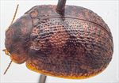
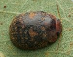
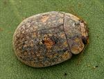
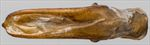
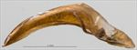
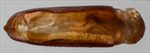
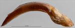
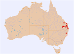

Click on images to enlarge
![Female, Woolooga, S.E. Queensland [2017-233b]](assets/image/Ta31/Ta31_A17-233b.jpg){kind=link}

Female, Woolooga, S.E. Queensland [2017-233b]
{kind=link}

Male, Miles, Queensland
{kind=link}

Male, East Kunderang, N.E. New South Wales
{kind=link}

Aedeagus, dorsal view (Miles, Queensland)
{kind=link}

Aedeagus, lateral view (Miles, Queensland)
{kind=link}

Aedeagus, dorsal view (Woodford, S.E. Queensland)
{kind=link}

Aedeagus, lateral view (Woodford, S.E. Queensland)
{kind=link}

Distribution (pale-coloured circles indicate records obtained from iNaturalist)
Name
Trachymela grossa (Blackburn)
Reference specimen
25-052691, Woodford, SE Queensland.
Adult Description
Length: ♂ 6.7–7.6 mm (n=14), ♀ (7.1)7.5–9.1 mm (n=20).
Colouration:
- Head: usually uniformly light- to mid-brown, very rarely a narrow strip behind labrum black, mandibles dark-brown with black tips; antennomeres 1–4 straw-brown, 5–11 similar or grading slightly darker towards apical antennomeres.
- Pronotum: discal area and a broad band extending out from it along posterior edge on each side dark-brown or black, bisected by a thin lighter-brown line through centre from anterior to posterior edge, marginal regions of a lighter shade, concolorous with head, with a distinct, black foveal elevation in centre.
- Scutellum: brown, concolorous with central line on pronotum, edged narrowly in black.
- Elytra: brown or black, mostly concolorous with darkest region of pronotum with contrasting patches and flecks of light brown (concolorous with marginal areas of pronotum) scattered so as to give a somewhat “speckled” appearance, the larger of these patches situated along the elytral margin and another a little above and posterior to humeral callus; punctures are concolorous with or a fractionally darker shade than interstices, humeral callus black.
- Venter & Legs: head brown, thoracic and abdominal ventrites black or dark-brown with lateral extremities of ventrites and distal leg segments often a slightly lighter shade, elytral epipleura brown.
- Cuticular Wax: light brown to orange-brown, with a very patchy distribution – concentrations are present in two patches on the head, along the lateral margins of the pronotum, in a thin band along lateral margins of elytra (in the sub-marginal sulcus), 2 small patches at base of each elytron and in the small depression just posterior and above each humeral callus; some specimens also have smaller patches arranged in 2–4 longitudinal lines from about middle of elytron towards apex; elsewhere the cuticular wax is very thinly scattered and may be of a lighter shade.
Morphology:
- Head: punctures moderately large (pd ≈ 2–2.5×ef) and slightly unevenly and densely distributed, interstices sometimes rough. Antennae short (AL/BL: ♂ 35–40%, ♀ 31–34%), filiform.
- Pronotum: almost evenly curved transversely to near margins which are slightly explanate, foveal depression absent or very weak, foveal elevation well developed, round, discal area with surface very slightly uneven, nitid, and puncturation clearly impressed with punctures concolorous with or fractionally larger than those on head, evenly to slightly unevenly distributed and relatively dense (spacing ≈ 1.5–2pd), becoming noticeably coarser towards lateral margins. Front margins join lateral margins in a smoothly rounded right-angle, with lateral margin curving smoothly and gradually towards rear margin, broadest at more than ¾ of distance to posterio-lateral angle.
- Scutellum: punctured, with punctures similar in size or slightly finer than on adjacent area of pronotum.
- Elytra: body rather flattened, greatest height viewed laterally in posterior half; surface evenly curved transversely, lightly curved longitudinally in anterior half, then more strongly curved, punctures embedded in very convex interstices, closely spaced and rather evenly distributed, interstices are thickened in many places forming small elevated verrucae at their intersections joined by short elevated ridges that may be oriented longitudinally or transversely, forming a complex granular surface, surface appears even more granular in posterior third due to closer spacing of punctures, punctures are usually more clearly defined but smaller in a smooth area straddling the elytral summit, elytral suture carinate for posterior third, marginal area in posterior third very slightly (rarely more so) concave, surface continuous under humeral callus. Vertical extension of epipleura relatively small (HCE/PW = 0.34–0.36).
- Venter: prosternal process narrowing and closed anteriorly, at most a very sparse scatter of setae present along prosternal process and on mesoventrite, a single long seta present on anterior, median and posterior trochanters; front edge of metaventrite beveled, flat; inner edge of epipleurae lacking setae.
Male Genitalia (Aedeagus):
- Dimensions: moderately long (LPE = 32–35% BL).
- Dorsal view: shaft approximately parallel-sided or converging almost imperceptibly towards rear of ostium (WPE = 0.24–0.27 LPE) from where sides converge smoothly towards apex, tip triangular, dorsal surface lightly sclerotized, dorso-median channel present but often short and poorly defined, ostium relatively large.
- Lateral view: shaft quite evenly and continually curved over whole length, tip deflexed.
Immature Stages
- Unknown.
Similar species
- Ta23: this species are very similar, their distributions overlap extensively and they utilize the same hosts. The most convenient way to differentiate between them is by the colouring of the midline of the pronotum and the scutellum. In Ta23, the pronotal disc is uniformly dark-brown, as is the scutellum. In specimens of Ta31, a thin, lighter-coloured strip running along the centre from the anterior to the posterior edge divides the dark-coloured discal area into two halves, with this lighter shade continuing posteriorly on to the scutellum. In addition, Ta31 differs from Ta23 by having a more pronounced contrast between the light- and dark-coloured areas on the pronotum and elytra and the possession of a less robust aedeagus.
- Ta12: this closely related species has a more southerly distribution but is very similar to Ta31, including in the structure of the aedeagus. Ta12 is distinguishable by the much lighter-coloured pronotum (most of the disc is light-brown), and the smaller proportion of black on the elytra, while ventrally it is generally mostly light-brown (though this character is quite variable in Ta12) compared to Ta31, which is predominantly black or dark-brown.
Notes
- Taxonomy: The identification of this species as Trachymela grossa (Blackburn) is by comparison of photographs of the type with typical specimens.
- Host Associations: Ta31 has been found on Eucalyptus tereticornis, E. chloroclada and E. exserta, all of which are red-gum group species (Symphyomyrtus : Exsertaria). A single record from Lophostemon is almost certainly incidental.
- Morphological Variation: Female specimens of Ta31 span an exceptionally wide range of body lengths from about 7 to 9 mm and the size distribution is bimodal (n=20), with the largest specimens tending to occur in the northern part of the species’ geographic range. It is possible that Ta31 as defined here actually includes two distinct species, something that is also suggested by the slight variation in aedeagus shapes (cf., the examples from Woodford and Miles in the figures) and the plot of aedeagus length vs body length, which is suggestive of two separate relationships.
Copyright © 2026. All rights reserved.